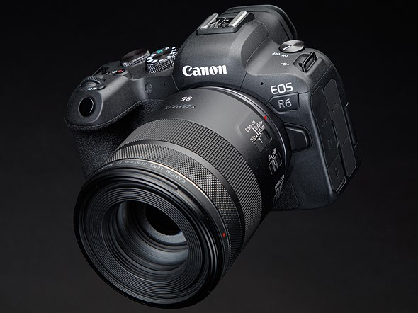

The Canon EOS R6
October 2, 2024 by Nathan Crossdale
The Canon EOS R6 is a highly capable mirrorless camera that appeals to both photographers and videographers. It features a 20.1 MP full-frame CMOS sensor, which delivers impressive image quality, especially in low-light conditions. For videographers, the R6 supports 4K video recording at up to 60 frames per second and 1080p at 120 fps for smooth slow-motion shots. The in-body image stabilization (IBIS) offers up to 8 stops of stabilization when paired with RF lenses, making handheld shooting more stable. Its Dual Pixel CMOS AF II autofocus system is incredibly fast and accurate, with excellent subject tracking for eyes, faces, and animals. The camera also performs well in low light, with an ISO range of 100-102,400, expandable up to 204,800. It includes dual UHS-II SD card slots for flexible storage options and can shoot at 12 fps with the mechanical shutter or 20 fps with the electronic shutter, perfect for capturing fast action. Overall, the R6 provides a great balance of performance for both still and video work.